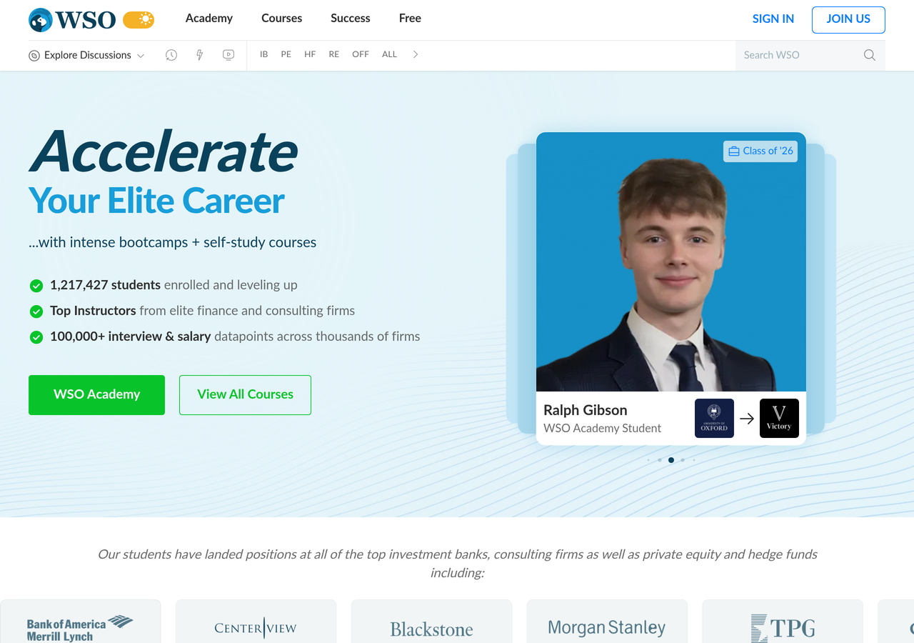
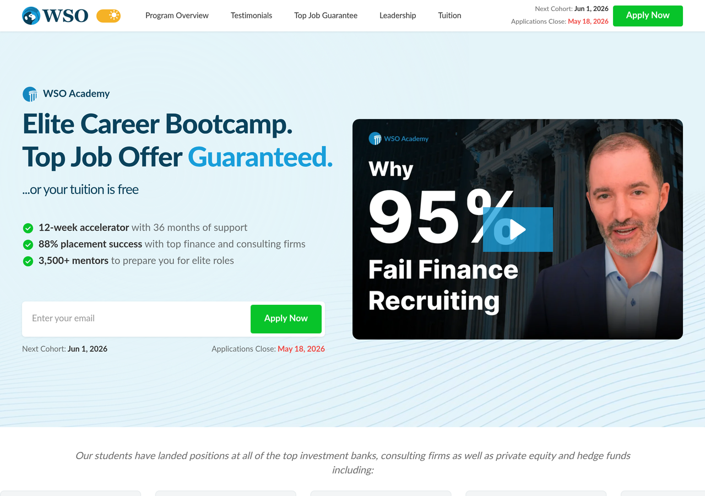

This is not a conversion audit. WSO is profitable and the funnel works. It's a product-opportunity audit, the kind of thing I'd bring to a first roadmap meeting. The throughline: WSO is sitting on a 17-year data moat and running it across two disconnected stacks. The PM hired into this role is the person who connects the seam and turns the archive into product. Ten findings, grouped four ways.
The free community member, the Academy applicant, and the Academy student are three different relationships with WSO. They live across two stacks that do not share a spine. The PM's job starts here: making the seam between them a designed product, not an accident of history.


Four interactive demos, one per quadrant of the role. Dev coordination, the AI interview coach, the archive intelligence layer, and the ops automation engine. Each one maps to a finding above.